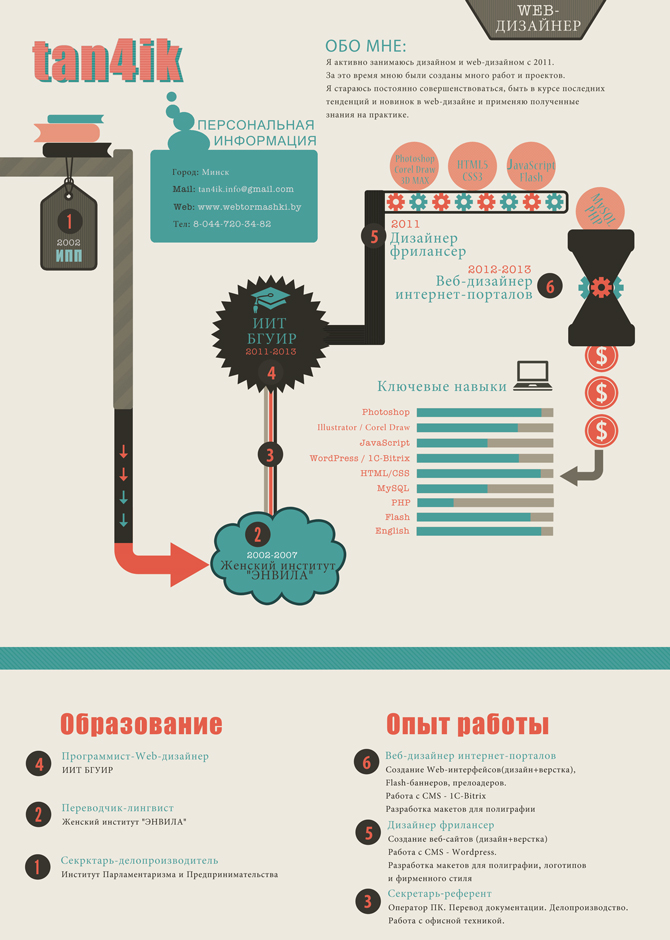

Пару слов о себе
веб-дизайнер, бждшница, мыловар, Apple-фан и просто творческий человек
Вредные привычки: фотошоп
Веб-дизайнер tan4ik
{kind=link}
Веб дизайн — основное направление моей деятельности. Я занимаюсь созданием оригинальных, красивых и в то же время функциональных Web-сайтов с максимальным учетом пожеланий заказчика и запросов целевой аудитории. Для меня важно, чтобы каждый мой сайт обладал индивидуальностью и производил отличное впечатление. Я стремюсь постоянно быть в курсе всех изменений и всегда готова к переменам. Большое внимание я уделяю процессу нахождения самого интересного, креативного решения.
Резюме

Навыки
Мои навыки и направление моей деятельности
Направление
Примеры моих работ вы можете увидеть в Портфолио.
Работа начинается с предоставления технического задания (ТЗ). ТЗ может быть составлено в свободной форме.
В зависимости от конкретных задач готовый макет может быть предоставлен в фотрмате .psd (Photoshop), .cdr (CorelDraw), .jpeg или любом другом.
- Создание Web-сайтов
- Создание Flash-баннеров
- Разработка макетов для полиграфии
- Разработка логотипов и фирменного стиля
- Создание открыток и вещей ручной работы
Ключевые навыки:
- Отличное владение графическими редакторами (Adobe Photoshop, Adobe Illustrator, InDesign, Corel Draw).
- Хорошие знание HTML5, JavaScript, MySQL, PHP, Adobe Flash, 3D MAX.
- Знание CMS - Wordpress, 1C-Bitrix
- Умение создавать адаптивные сайты с кроссбраузерной версткой
- Навыки рисования (на бумаге и графическом планшете).
- Хорошее знание английского языка (письмо, чтение, устное общение).
- Понимание тенденций современного дизайна, возможность создания работ в разных стилях.
- Умение адаптировать свои возможности под задачи конкретного проекта, как типового, так и эксклюзивного.
Мои заказчики
Логотипы моих заказчиков

{kind=link}
{kind=link}
{kind=link}